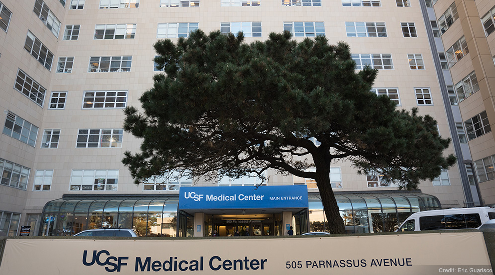

Die Adresse des Labors
1984
Im Labor von Denis Gospodarowicz wurde mit den Entdeckungen von FGF und VEGF Wissenschaftsgeschichte geschrieben. Wenn man das Labor betrat, wäre man nicht unbedingt darauf gekommen. Als ich im Sommer 1984 zum ersten Mal dort auftauchte, war ich nicht so richtig auf das eingestellt, was mich dort erwartete.
Das Labor lag im 12. Stock des Moffitt Hospitals. Die Aussicht war großartig. Man blickte über San Francisco hinweg auf den tiefblauen Pazifik. Der Rest war ziemlich grottig.

Wenn man vorne hereinkam, stand man zunächst in einem Raum von vielleicht fünfzehn Quadratmetern. Dort saßen die technischen Assistentinnen. Barbara, die damals noch relativ neu war. Jenny, die chinesischstämmige gute Seele des Labors. Sie konnte alles, wusste alles und war immer freundlich. Wenn irgendwo ein Problem auftauchte, fragte man Jenny. Und dann Sharon.
Sharon war am ehesten eine Mischung aus Cheerleader, Rührmichnichtan und WASP. Also White Anglo-Saxon Protestant. Verkniffen und ehrgeizig, zu etwas Größerem berufen. Tatsächlich landete sie später in der Arbeitsgruppe von Axel Ullrich, einem der Biotech-Pioniere, und machte Karriere in der Biotechnologie. Jedenfalls war sie nicht auf meiner Wellenlänge. Einfach zu spröde.
Nebenan befand sich das Büro von Denis. Ein winziger Raum von vielleicht fünf Quadratmetern. Der Teppich war abgewetzt. Überall lagen Publikationen herum. Dazwischen leere Kaffeetassen, Notizzettel und die Reste seiner Zigarren. Meistens war Denis allerdings gar nicht dort. Er liebte das Experimentieren und stand lieber mitten im Labor als hinter dem Schreibtisch zu sitzen. Das tat er nur, wenn er an einer Publikation arbeitete. Natürlich analog. Ohne Computer. Auf dem Boden lagen Papierschnipsel, die heruntergefallen waren, als er Teile seiner Manuskripte buchstäblich per „cut and paste“ zusammengepfriemelt hatte.
Im Zentrum des vorderen Laborraums, da, wo die TAs saßen, befand sich das große Nikon-Mikroskop. Unser wichtigstes Werkzeug. Dort wurden die Gefäßzellen angeschaut, und beurteilt. Napo saß stundenlang davor, kerzengerade und starrte unablässig in die Okulare. So als könne er dadurch den ersehnten Nachweis eines neuen Wachstumsfaktors herbeizaubern. Daneben stand der Coulter Counter. Mit ihm bestimmten wir die Zellzahlen und konnten messen, ob ein Wachstumsfaktor aktiv war oder nicht.
Und dahinter die Werkbänke. Hier herrschte ständig Betrieb. Jeder kümmerte sich um seine Zellkulturen. Sie wurden behandelt wie Babys. Man päppelte sie, schaute mehrmals täglich nach ihnen und fütterte sie. Gelegentlich kroch eine Kakerlake über die Werkbank. Mit einem heftigen Schlag des Schuhabsatzes wurde sie eliminiert und anschließend entsorgt. Dann ging’s weiter mit der Laborarbeit.
Im nächsten Raum wurde Biochemie betrieben. Hier wurden Gewebe aufgeschlossen, Proteine extrahiert und über Säulen gejagt. Überall standen Fraktionen herum, kleine Röhrchen mit Flüssigkeiten und Apparaturen, die für irgendwas nützlich waren. Hier stand auch Denis´ Stolz: eine Hochdruckflüssigkeits-Chromatographie-Anlage, mit der er FGF reinigte. Gesteuert von einem Computer!
Vom Biochemie-Labor gelangte man in einen schmalen Durchgang. Vielleicht vier Quadratmeter groß. Hier standen die Schreibtische von Gera und mir. Und hier standen auch die beiden modernsten Geräte des gesamten Labors. Zwei Apple Macintosh. 1984 war das eine kleine Sensation. Sie hatten winzige Bildschirme und 256 Kilobyte Arbeitsspeicher. Damals erschien uns das hochmodern. Es waren die ersten Computer, mit denen ich jemals gearbeitet hatte. Und hier wurde ich zum Apple-Fan. (Seither habe ich nur mit Macs gearbeitet).
Wenn man den Durchgang hinter sich ließ, gelangte man in den letzten Raum. Der war noch etwas schmuddeliger als der Rest. Hier hatten Gera und ich unsere Werkbänke. Gleichzeitig wurde dort alles gelagert, was sonst nirgendwo mehr unterkam. Kartons, Geräte, Chemikalien und allerlei Gerümpel. Außerdem befand sich dort der Kühlraum. An warmen Tagen war das der angenehmste Ort des gesamten Labors.
Und das war es auch schon. Vier kleine Räume. Ein Mikroskop. Drei Macintosh. Ein Kühlraum. Ein paar Kakerlaken. Und hier sollte Wissenschaftsgeschichte geschrieben werden?
Unglaublich. Aber genau so war es.